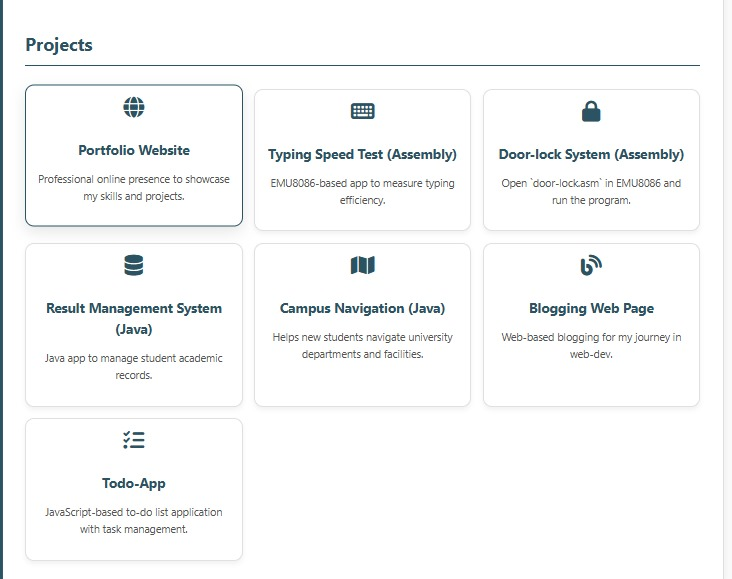
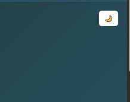
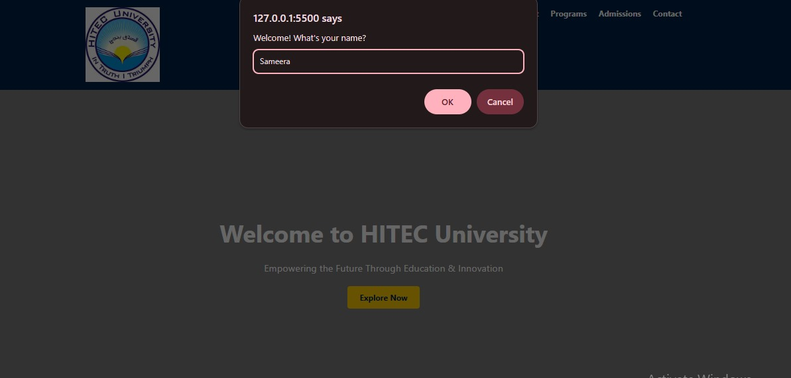
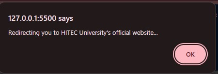
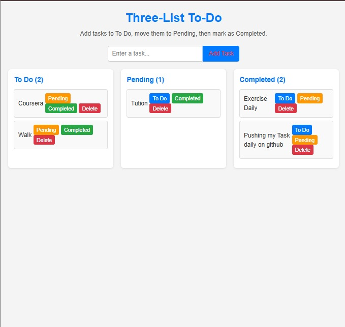

📌 Portfolio Website
My portfolio started as a simple HTML & CSS project. It displayed static information about me and my projects. Later, I upgraded it using JavaScript DOM i added new features to make it more interactive and engaging:
- Added interactive navigation
- Added button for Dark and light mood
- Improvement in project display portion


🎓 University Landing Page
My university landing page was first created with HTML & CSS for layout and styling. Then I enhanced it with JavaScript:
- Added dropdown menus in navigation (About, Admissions, Programs)
- Made Graduate/Undergraduate programs expandable
- Created redirection features with links
- Interactive message box where users can enter their name


To-Do App
My To-Do App was built directly with JavaScript to practice DOM manipulation. Some improvements I made:
- Added the types of list clicking feature enabled through JavaScript
- Users can add, edit, and delete tasks dynamically
- Improved UI with CSS styling
- Form validation and interactive task list
